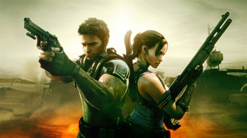

origems
Resident Evil, conhecido como Biohazard no Japão, é uma franquia de mídia criada por Shinji Mikami e desenvolvida pela produtora Capcom como uma série de videojogos de survival horror, ação, tiro em terceira pessoa e primeira pessoa. A franquia retrata histórias sobre incidentes biológicos e virais e posteriormente expandiu-se para uma série de filmes em live-actions, animação, história em quadrinhos, figuras de ação entre outros produtos.
O jogo homônimo foi criado por Shinji Mikami e Tokuro Fujiwara e lançado para o console Playstation em 1996. Foi um título importante por ter definido o gênero survival horror nos jogos eletrônicos e também por ter influenciado de, forma parcial, na popularização da temática zumbi na cultura popular. Com o lançamento de Resident Evil 4 (2005), a franquia mudou o seu gênero para uma jogabilidade mais dinâmica presenciada em jogos eletrônicos de tiro e popularizou a visão "over-the-shoulder" (acima do ombro, em tradução livre) muito presente em jogos em terceira pessoa. No lançamento do jogo Resident Evil 7: Biohazard (2017), a franquia retornou com o clima de terror de sobrevivência, agora em uma perspectiva em primeira pessoa.
primeiro jogo da saga
Resident Evil, conhecido no Japão como Biohazard (バイオハザード Baiohazādo?), é um jogo eletrônico de survival horror lançado originalmente para Playstation. É o primeiro título da série de jogos Resident Evil. O enredo segue Chris Redfield e Jill Valentine, membros de uma força-tarefa de elite conhecida como S.T.A.R.S., enquanto investigam os arredores da cidade de Raccoon City após o desaparecimento de seus membros de equipe. Eles logo ficam presos em uma mansão infestada por zumbis e outros monstros. O jogador, tendo escolhido jogar como Chris ou Jill no início do jogo, deve explorar a mansão para descobrir seus segredos e encontrar uma maneira de escapar.
Concebido pela primeira vez pelo produtor Tokuro Fujiwara como uma recriação de seu antigo jogo de terror Sweet Home (1989),[5][6] o desenvolvimento de Resident Evil foi liderado por Shinji Mikami. Passando por várias reformulações, o jogo foi primeiro desenvolvido para o Super Nintendo Entertainment System em 1993,[7][8] depois como um jogo de PlayStation em primeira pessoa totalmente 3D em 1994 e, finalmente, como um jogo em terceira pessoa com cenários pré-renderizados.[9][10] A jogabilidade consiste principalmente de ação em terceira pessoa com ênfase adicional no gerenciamento de inventário, exploração e resolução de quebra-cabeças. Resident Evil estabelece muitas convenções vistas posteriormente na série, incluindo o esquema de controle, sistema de inventário, sistema de salvamento e uso de modelos 3D sobrepostos por fundos pré-renderizados.
resident evil 2
Resident Evil 2, conhecido no Japão como Biohazard 2 (バイオハザード2 Baiohazādo Tsū?) é um jogo eletrônico de survival horror lançado originalmente para o PlayStation em 1998. Desenvolvido pela Capcom como o segundo título da série Resident Evil, sua história se passa dois meses após os eventos do primeiro jogo. Ele é ambientado em Raccoon City, uma comunidade americana cujos moradores foram transformados em zumbis pelo T-virus, uma arma biológica desenvolvida pela empresa farmacêutica Umbrella Corporation. Em sua fuga da cidade, os dois protagonistas, Leon S. Kennedy e Claire Redfield, encontram-se com outros sobreviventes e são confrontados por William Birkin, o criador de um vírus ainda mais poderoso chamado de G-virus, que ele injetou em si mesmo.
A jogabilidade de Resident Evil 2 centra-se na exploração, solução de quebra-cabeças e combate, apresentando elementos típicos do gênero survival horror, tais como munição e salvamentos limitados. A principal diferença do jogo com seu antecessor é o "Sistema Zapping", que fornece a cada personagem história e obstáculos únicos. Desenvolvido por uma equipe entre quarenta e sessenta pessoas ao longo de um ano e nove meses, Resident Evil 2 foi dirigido por Hideki Kamiya e produzido por Shinji Mikami . A versão inicial, comumente referida como Resident Evil 1.5, diferia drasticamente do produto final e foi descontinuada quando já estava com mais de sessenta por cento finalizada, depois de ter sido considerada "maçante e chata" pelo produtor. O resultado da recriação introduziu cenários diferentes e uma história mais cinematográfica, apoiada por uma trilha sonora que emprega "desespero" como tema subjacente.
omo um título de survival horror, Resident Evil 2 apresenta as mesmas mecânicas básicas de seu jogo antecessor, Resident Evil. O jogador explora uma cidade fictícia enquanto resolve quebra-cabeças e luta contra monstros.[2] Os dois protagonistas podem se equipar com armas de fogo, mas a munição é limitada, adicionando um elemento tático para o uso delas.[2][3] Na tela de status, é possível verificar a condição dos personagens, usar itens medicinais para curar os ferimentos e equipar armas.[4][5] A saúde atual dos protagonistas também pode ser determinada pela sua postura e velocidade de movimento. Por exemplo, o personagem vai colocar a mão em seu estômago se estiver ferido ou coxear lentamente se estiver à beira da morte.[2] Os jogadores podem carregar um número limitado de itens e devem armazenar os outros em caixas colocadas em todo o mundo do jogo, onde podem ser recuperados posteriormente.[2][6] Cada protagonista é acompanhado por um parceiro de suporte durante o curso da história. Eles seguem o jogador em algumas cenas e ocasionalmente se tornam jogáveis.[1][7] Certos quartos possuem máquinas de escrever que podem ser usadas para salvar o jogo. No entanto, esta ação é limitada ao número de fitas de tinta encontradas pelo cenário.[8][9] O gráfico de Resident Evil 2 é composto por personagens e itens poligonais gerados em tempo real – e, portanto, móveis –, sobrepostos por fundos pré-renderizados que são vistos a partir de ângulos de câmeras fixas.[2][10] O jogo usa controles "tanque", o que significa que pressionar para cima move o personagem na direção em que ele está virado, para baixo inverte-o e para a esquerda e para a direita gira-o, independentemente da perspectiva da câmera.[11]
Resident Evil 3: Nemesis

Resident Evil 3: Nemesis, conhecido no Japão como Biohazard 3: ast Escape (バイオハザード3ラストエスケープ Baiohazādo 3 Rasuto Esukēpu?), é um jogo eletrônico de survival horror desenvolvido e publicado pela Capcom, lançado originalmente para o PlayStation em 1999. É o terceiro jogo da franquia Resident Evil, e ocorre antes e após os acontecimentos de Resident Evil 2.
A história centra-se em Jill Valentine e em seus esforços para escapar de Raccon City, uma cidade completamente infectada com um novo tipo de arma biológica secreta desenvolvida pela empresa farmacêutica Umbrella Corporation. O jogo usa o mesmo motor que seus antecessores e apresenta modelos 3D sobre fundos pré-renderizados com ângulos de câmera fixa. Ao contrário dos jogos anteriores, Resident Evil 3: Nemesis foi projetado para ser mais orientado para a ação. Ele apresenta um maior número de inimigos para serem derrotados e introduz a criatura Nemesis, que persegue periodicamente o jogador até o final do jogo.
Resident Evil 3 foi um sucesso crítico e comercial, vendendo mais de três milhões de unidades em todo o mundo. A maioria dos críticos elogiaram os gráficos por serem detalhados e Nemesis como um vilão assustador, mas alguns criticaram a curta duração do jogo e da história. Após o seu lançamento no PlayStation, o jogo foi posteriormente portado para Dreamcast, Microsoft Windows e GameCube. Uma recriação, intitulada Resident Evil 3, foi lançada em 3 de abril de 2020 para Microsoft Windows, PlayStation 4 e Xbox One.
resident evil 4
Resident Evil 4, conhecido no Japão como Biohazard 4 (バイオハザード4 Baiohazādo Fō?), é um jogo eletrônico de survival horror e tiro em terceira pessoa desenvolvido e publicado pela Capcom, lançado originalmente para o GameCube em 2005. É o sexto jogo principal da franquia Resident Evil.
A história segue o agente especial Leon S. Kennedy, que é enviado em uma missão para resgatar a filha do presidente dos Estados Unidos, Ashley Graham, que foi sequestrada por um culto religioso em uma parte rural da Espanha. Leon luta contra hordas de inimigos infectados por um parasita controlador de mentes e se reúne com a espiã Ada Wong. Afastando-se dos ângulos de câmera fixa e do estilo de jogo mais lento dos títulos anteriores, Resident Evil 4 a presenta um sistema de câmera dinâmico e jogabilidade orientada para a ação.
Planejado desde dezembro de 1999, o jogo foi submetido a um longo processo de desenvolvimento, durante o qual quatro versões foram descartadas. Inicialmente desenvolvido para o PlayStation 2, a primeira produção foi dirigida por Hidek Kamiya depois que o produtor Shinji Mikami pediu-lhe para criar um novo título para a série Resident Evil; no entanto, como este sentiu que o projeto havia se afastado muito de suas raízes, ele foi desmembrado em um novo jogo chamado Devil May Cry por recomendação dele. Outras versões foram descartadas até que Mikami assumiu a função de diretor do que se tornou o produto final. O jogo foi destinado a ser um exclusivo do GameCube como parte do Capcom Five, mas uma versão para PlayStation 2 foi anunciada antes mesmo do lançamento. Posteriormente, também foi lançado para Windows, Wii, PlayStation 3, Xbox 360, PlayStation 4, Xbox One e Nintendo Switch, bem como recebeu versões reduzidas para iOS, Zeebo e Android e teve uma versão em realidade virtual para o Oculus Quest 2.
Resident Evil 4 recebeu aclamação da crítica. Ele ganhou muitos prêmios de Jogo do Ano em 2005 e foi visto como um sucesso multiplataforma que influenciou a evolução dos gêneros survival horror e de tiro em terceira pessoa. O jogo também foi pioneiro e popularizou a perspectiva de visão "sobre o ombro" em terceira pessoa. Desde então, tem sido amplamente considerado um dos melhores jogos de todos os tempos. Uma recriação de mesmo nome foi lançada em março de 2023.
resident evil 5

Resident Evil 5[a] é um jogo eletrônico de tiro em terceira pessoa desenvolvido e publicado pela Capcom. É o sétimo título principal da série Resident Evil, e foi anunciado em 2005 (o mesmo ano em que seu predecessor Resident Evil 4 foi lançado). Resident Evil 5 foi lançado para os consoles PlayStation 3 e Xbox 360 em março de 2009 e para o Microsoft Windows em setembro do mesmo ano. A trama gira em torno da investigação dos agentes da B.S.A.A. Chris Redfield e Sheva Alomar de uma ameaça terrorista em Kijuju, uma região fictícia na África. Redfield logo descobre que precisará confrontar seu passado na forma de seu velho inimigo Albert Wesker e sua ex-parceira Jill Valentine.
A jogabilidade de Resident Evil 5 é semelhante à do jogo anterior, embora seja o primeiro título da série projetado para ter uma j ogabilidade cooperativa de dois jogadores. Ele também foi cons iderado o primeiro jogo da série principal a afastar-se do gênero sobrevivência, com os críticos dizendo que tinha mais semelhanças com um jogo de ação. Capturas de movimento foram usadas para filmar as cutscenes, e foi o primeiro jogo a usar um sistema de câmera virtual. Vários membros da equipe de produção do primeiro Resident Evil trabalharam em Resident Evil 5. A versão de PC foi desenvolvida pela Mercenary T echnology.
resident evil 6
Resident Evil 6, chamado no Japão de Biohazard 6 (バイオハザード 6 Baiohazādo Shikkusu?), é um videojogo do gênero ação jogado em terceira pessoa desenvolvido e publicado pela Capcom. Apesar do nome é o nono jogo da série principa l Resident Evil e foi lançado em 2 de outubro de 2012 para PlayStation 3 e Xbox 360. A versão para Microsoft Windows foi lançada no dia 22 de março de 2013. O game também ganhou uma versão completa com todas as DLC para PlayStation 4 e Xbox One em 29 de março de 2016.
A história é contada a partir das perspectivas de Chris Redfield, membro e fundador da BSAA traumatizado por ter falhado em uma missão; Leon S. Kennedy, um sobrevivente de Raccoon City e agente especial do governo; Jake Muller, filho ilegítimo de Albert Wesker e associado de Sherry Birkin; e Ada Wong, uma agente solitária com ligações aos ataques bio-terroristas pela Neo-Umbrella.
Resident Evil 6 recebeu críticas negativas aquando do lançamento da demo devido aos problemas nos controles e críticas muito diversas devido à mudança drástica da jogabilidade encontrada na versão final do jogo, sendo um ponto de elogio e também de contraste nas diferentes análises. Os sites de críticas agregadas GameRankings e Metacritic deram à versão PlayStation 3 73,55% e 74/100, à versão Xbox 360 69,03% e 67/100 e à versão PC 68,73% e 68/100, respectivamente. Apesar de não ter sido bem recebido tanto pela imprensa especializada como pelos jogadores, Resident Evil 6 vendeu mais de 5,2 milhões de unidades, tornando-se no terceiro jogo mais vendido de sempre da Capcom, depois de Resident Evil 5 e Street Fighter II.
resident evil 7
Resident Evil 7: Biohazard,[a] conhecido no Japão como Biohazard 7: Resident Evil (バイオハザード7 レジデント イービル Baiohazādo 7 Rejidento Ībiru?)[b] é um jogo eletrônico do gênero survival horror produzido pela Capcom e lançado em 24 de janeiro de 2017 para Microsoft Windows, PlayStation 4 e Xbox One, com a versão de PlayStation 4 tendo suporte completo para PlayStation VR.[1] Um versão em nuvem foi lançada para o Nintendo Switch no Japão em 2018 e no resto do mundo em dezembro de 2022. Uma versão aprimorada para o PlayStation 5 e Xbox Series X e S foi lançada em junho de 2022.[2] O jogo é o décimo título principal da série Resident Evil, é importante destacar que o jogo: Resident Evil Survivor foi o primeiro Resident Evil que utilizou a perspectiva em primeira pessoa, no entanto, se trata de um spin-off da série, portanto, Resident Evil 7 foi o primeiro Resident Evil da série principal que usou a perspectiva em primeira pessoa.[3]
A história segue a busca do civil Ethan Winters por sua esposa Mia, que o leva a uma mansão agrícola aparentemente abandonada e habitada pela família Baker. Ethan faz uso de armas e ferramentas na luta contra os membros da família e os "Mofados", uma forma humanoide de bactéria. Itens de cura são usados em caso de lesão e há enigmas que precisam ser resolvidos para dar prosseguimento a história.
Resident Evil 7 foi anunciado durante a E3 2016 depois de vários rumores.[4] Mais tarde naquele dia, uma demonstração intitulada Resident Evil 7 Teaser: Beginning Hour foi lançada na PlayStation Store para os assinantes da PlayStation Plus. Liderado por Koshi Nakanishi, diretor de Resident Evil: Revelations, a equipe de desenvolvimento foi composta por cerca de 120 pessoas. Em vez de ser centrado na ação como seus antecessores Resident Evil 5 e 6, os elementos de survival horror e a exploração tiveram prioridade no novo título. Para isso, o jogo utiliza uma perspectiva em primeira pessoa. Eles usaram o novo motor gráfico RE Engine, que já tinha sido testado na demonstração em realidade virtual KITCHEN na E3 de 2015.[5]
resident evil village

Três anos depois de derrotar os Bakers e Eveline em Dulvey, Ethan e Mia Winters foram transferidos à Europa por Chris Redfield, a fim de começarem uma nova vida com sua filha recém-nascida, Rosemary Winters. Em uma determinada noite, Mia é assassinada por Chris Redfield enquanto ele e seu esquadrão Houndwolf invadem a casa, deixando Ethan inconsciente e sequestrando-o junto com sua filha. Ao acordar, Ethan se depara ao lado de um caminhão de transporte capotado, chegando a nas proximidades de uma vila aterrorizada por licanos. Ethan é incapaz de salvar os aldeões restantes, sendo capturado e levado perante a sacerdotisa da aldeia, denominada de Mãe Miranda e os quatro Lordes. Ethan consegue escapar de seus captores e se aventura no castelo de Lady/Alcina Dimitrescu para encontrar Rosemary — com o apoio de um comerciante local conhecido como Duque. Ethan elimina Dimitrescu e suas filhas Bela, Cassandra e Daniela, encontrando um frasco contendo a cabeça de Rosemary em um frasco. O duque explica que Miranda colocou as partes do corpo de Rosemary em quatro frascos diferentes para um ritual especial e que ela pode ser restaurada se Ethan recuperar os outros frascos mantidos pelos senhores restantes.[9][10]
Posteriormente, enquanto luta contra os lordes Beneviento e Moreau por seus frascos, Ethan descobre que o esquadrão Houndwolf também está na vila. Ethan passa no teste do último lorde, Heisenberg, em busca do quarto e último frasco — a qual é convidado para a fábrica do lorde — onde Heisenberg oferece uma proposta para derrotar Miranda juntos. Entretanto, Ethan recusa-se a trabalhar junto com Heisenberg entrando em combate com o lorde. Ethan encontra e confronta Chris sobre a morte de Mia, descobrindo que a "Mia" que Chris matou durante a cutscene inicial, na verdade era Miranda disfarçada de sua esposa. Chris revela que Miranda queria Rosemary para a cerimônia, a fim de trazer sua filha Eva morta no final da Primeira Guerra Mundial, durante a pandemia da gripe espanhola. Chris destrói a fábrica de Heisenberg enquanto Ethan usa um tanque improvisado para derrotar Heisenberg. Miranda confronta Ethan e o mata depois que ela revela seus planos de tomar Rosemary como sua filha.
Chris testemunha a morte de Ethan e leva-o para o esquadrão Houndwolf junto com Rosemary. Enquanto a força de assalto BSAA distrai Miranda, entrando em uma caverna abaixo da vila, descobre-se o local do Megamiceto (chamado de "raiz fúngica") — a fonte do molde. Chris planta uma bomba no Megamiceto e prossegue nas cavernas onde encontra o laboratório de Miranda, descobrindo que ela viveu um século desde que entrou em contato com o fungo, sendo a mentora do Oswell E. Spencer, fundador da Umbrella Corporation. Miranda usou o conhecimento coletivo daqueles que o fungo registrou para transformar a vila em seu laboratório pessoal para reviver sua filha, Eva, com os quatro lordes e Eveline, que possuía o DNA de Eva, sendo experimentos fracassados. Ela encontrou compatibilidade em Rosemary, a quem considerou uma Eveline aperfeiçoada devido às suas habilidades especiais herdadas de Ethan e Mia. Chris também resgata a prisioneira Mia, descobrindo que Ethan ainda está vivo quando Mia revela seus poderes.
| Título | ano | Plataforma Original | Outras Plataformas |
| Resident Evil | 1996 | PlayStation | PC, Sega Saturn, Nintendo DS, PlayStation 3 |
| Resident Evil2 | 1998 | PlayStation | PC, Dreamcast, GameCube, PlayStation 3, Game.com, Nintendo 64, |
| Resident Evil 3 Nemesis | 1999 | PlayStation | PC, Dreamcast, GameCube, PlayStation 3 |
| Resident Evil 4 | 2005 | GameCube | PC, PlayStation 2, PlayStation 3, PlayStation 4, Xbox 360, Xbox One, Wii, Switch, Android, iOS, Zeebo |
| Resident Evil 5 | 2009 | PlayStation 3,xbox 360 | PC, PlayStation 4, Xbox One, Switch, Shield Android TV |
| Resident Evil 6 | 2012 | PlayStation 3,xbox 360 | PC, PlayStation 4, Xbox One, Switch |
| Resident Evil 7 | 2017 | PlayStation 4,xbox one Windows | Switch (Versão em Cloud), PlayStation 5, Xbox Series X |
| Resident Evil village | 2021 | PlayStation 4, Playstation 5, Stadia, Xbox One, Xbox Series X, Windows | PlayStation 4, Playstation 5, Stadia, Xbox One, Xbox Series X, Windows |